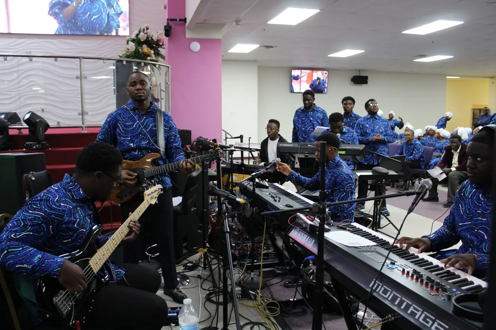

Scheduled
ScheduledOpen Heaven Encounter
Open Heaven Encounter — October 22, 2026
Thursday, October 22 · 6:00 PM CT
Set a reminder on YouTube →
Join regional services online and continue with the latest messages from Mega Region 2.
Healing & Deliverance Hour every Tuesday at 7:00 PM CT and Open Heaven Encounter every Thursday at 6:00 PM CT. Set a reminder on YouTube and join us live.
 Play video: Healing & Deliverance Hour — 10-20-2026 Most recent livestream
Play video: Healing & Deliverance Hour — 10-20-2026 Most recent livestream